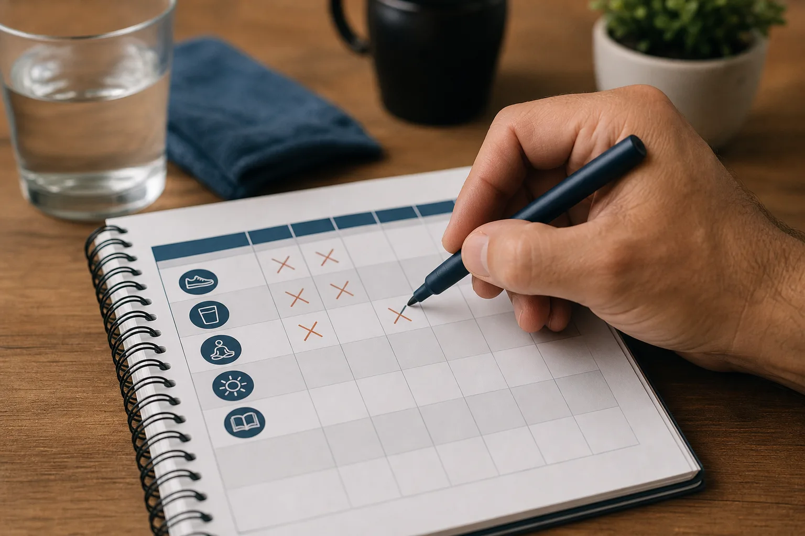
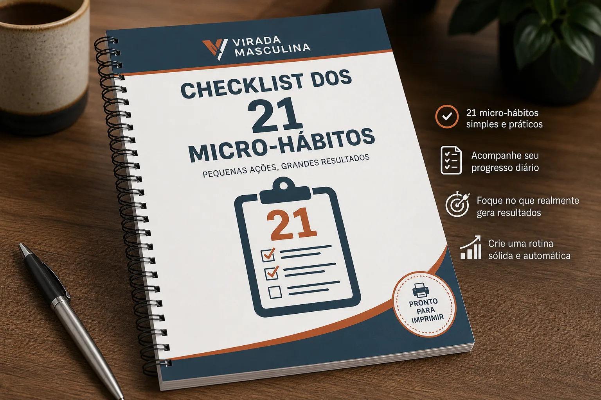
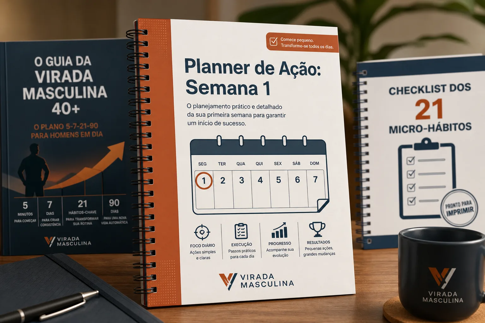

Guia da Virada Masculina 40+
O mapa completo do Método 5-7-21-90, explicando o porquê e o como de cada passo, de forma direta e sem enrolação.
Aprovado por homens 40+
O Guia da Virada Masculina 40+, o Checklist e o Planner te guiam no Plano 5-7-21-90 para micro-hábitos de saúde.
Quero começar com 5 minutosAcesso imediato. Compra 100% segura.
A rotina do trabalho e da família consome todo o seu tempo e energia. A ideia de começar uma dieta restritiva ou uma academia intensa parece impossível. Você sabe que precisa se cuidar, mas não sabe por onde começar, e adia a visita ao médico por receio do que vai ouvir. Se você se identifica, saiba que a solução é mais simples do que parece.
Dietas radicais, treinos exaustivos, metas irreais e a sensação de fracasso em poucas semanas.
Micro-hábitos de 5 minutos que se encaixam na sua rotina, criam consistência e geram resultados que você sente.
O primeiro passo é o mais simples: decidir começar. Com o guia, você terá clareza do caminho, sem intimidação.
Comece com ações tão rápidas que é impossível dizer 'não tenho tempo'. O objetivo é apenas criar o hábito de agir.

Transforme a ação inicial em um comportamento consistente. O planner da primeira semana te guia para não esquecer.
Com a consistência estabelecida, você implementa progressivamente os 21 hábitos que farão a maior diferença na sua saúde.
Após 90 dias, os novos hábitos se tornam automáticos. Você não precisa mais de esforço para manter sua nova rotina de saúde.
O mapa completo do Método 5-7-21-90, explicando o porquê e o como de cada passo, de forma direta e sem enrolação.

Uma ferramenta para imprimir e acompanhar a implementação dos hábitos que vão transformar sua saúde e energia.

Seu guia prático para vencer a inércia e garantir a consistência nos primeiros 7 dias, o período mais crítico da mudança.
Sempre achei que cuidar da saúde depois dos 40 era só pra quem tinha tempo e dinheiro sobrando. Esse guia me mostrou que não. Com 5 minutos por dia, consegui encaixar hábitos que fizeram uma diferença gigante na minha energia. Acabou aquela moleza da tarde.
Eu estava com medo de ir ao médico, mas mais medo ainda de não saber por onde começar. O Método 5-7-21-90 foi o pontapé que eu precisava. É prático, sem complicação, e me deu a confiança pra retomar as rédeas da minha saúde. Me sinto mais leve e disposto pra curtir meus filhos.
Já tentei de tudo: academias que abandonei, dietas que não segui. Achei que não tinha mais jeito. Mas o conceito de micro-hábitos do guia foi um divisor de águas. Não sinto que estou fazendo 'sacrifício', e os resultados são visíveis.
9,90
R$ 39,90
R$ 19,90
Acesse o Guia da Virada Masculina e todas as ferramentas. Se em até 7 dias você não sentir que este é o ponto de partida mais simples e eficaz para a sua saúde, basta enviar um único e-mail e nós devolvemos 100% do seu investimento. Sem perguntas, sem burocracia.
Acesso vitalício | Compra segura | Receba na hora
Espere, antes de ir!
Por apenas R$ 4 a mais, adicione as ferramentas práticas que garantem que você vai colocar o método em ação e não desistir na primeira semana.
Upgrade: Plano da Virada
R$ 19,90R$ 16,90